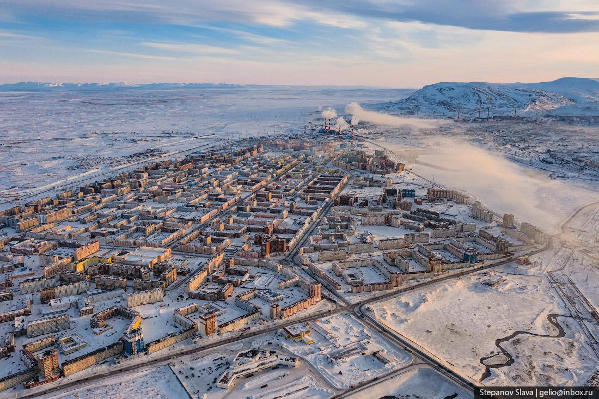

Cele mai reci orase pozitionate la malul marilor si al oceanelor:
| Orase |
Tara |
Poza cu orasul |
Temperatura medie
anuala / in luna ianuarie
|
Atractii |
Locatie |
Mergem? |
| Norilsk |
Rusia |
 |
-10.5°C / -31°C |
- Muzeul Polar Norilsk: Oferă o perspectivă asupra istoriei și culturii zonei arctice.
- Catedrala Sf. Nicolae: O construcție impresionantă de lemn, una dintre cele mai mari catedrale din lume construită din acest material.
- Muntele Putorana: Zona din apropierea orașului oferă peisaje spectaculoase, cu stânci și cascade.
|
📍 |
|
| Barrow, Alaska |
SUA |
 |
-11.1°C / -24°C |
- Parcul Național Arctic: Oportunități de observare a faunei sălbatice arctice și peisaje unice.
- Point Barrow: Cel mai nordic punct al Statelor Unite, cu oportunități pentru observarea aurora boreală și a naturii sălbatice.
- Heritage Center Utqiaġvik: Un muzeu care prezintă cultura și istoria populației Inupiat.
|
📍 |
|
| Yellowknife |
Canada |
|
-5.2°C / -27°C |
- Parcul Național Wood Buffalo: Situat în apropiere de Yellowknife, acesta este cel mai mare parc național din Canada și adăpostește un habitat divers și bogat pentru faună sălbatică.
- Observarea Aurorii Boreale: Datorită latitudinii și climatului rece, Yellowknife oferă condiții excelente pentru observarea fenomenului luminos al aurorii boreale.
- Galeria de Artă Prince of Wales Northern Heritage Centre: Oferă expoziții și colecții impresionante de artă și artefacte ale populației indigene din teritoriile de Nord-Vest ale Canadei.
|
📍 |
|
| Murmansk |
Rusia |
|
-0.2°C / -10°C |
- Catedrala Sfânta Trinitate: O catedrală impresionantă din oraș, cunoscută pentru arhitectura sa frumoasă.
- Muzeul Regional Murmansk: Un muzeu interesant care prezintă istoria și cultura orașului și regiunii.
- Portul Murmansk: Fiind un important oraș portuar în Oceanul Arctic, portul oferă priveliști interesante asupra activității maritime.
|
📍 |
|
| Nuuk |
Groenlanda |
|
-1.2°C / -9°C |
- Palatul Kulturhuset: Centrul cultural al orașului, unde puteți explora cultura și arta inuite.
- Statuia lui Hans Egede: O statuie istorică a misionarului danez considerat fondatorul orașului.
- Fiordul Nuup Kangerlua: O călătorie cu barca prin acest fiord oferă o priveliște minunată asupra peisajelor groenlandeze și a ghețarilor.
|
📍 |
|
| Reykjavik |
Islanda |
 |
4.3°C / -1°C |
- Biserica Hallgrímskirkja: O biserică iconică cu o arhitectură impresionantă, ce oferă o priveliște panoramică asupra orașului.
- Muzeul Național al Islandei: Oferă o expunere captivantă a istoriei și culturii islandeze.
- Blue Lagoon: O celebra lagună geotermală în apropiere de Reykjavik, unde vizitatorii pot să se relaxeze și să se bucure de tratamente spa.
|
📍 |
|